Ingresar al Módulo Alertas
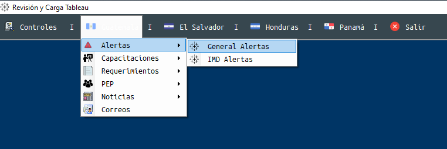
General Alertas: Permite consultar por rango de fechas la información en la tabla general de alertas en tableau, asi como migrar información desde la tabla IMD Alertas.
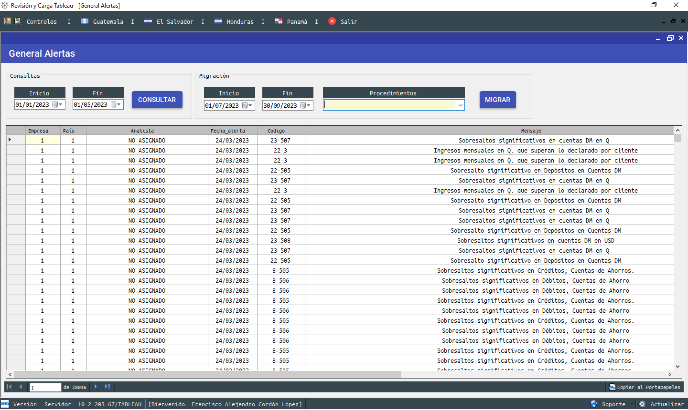
Los procedimientos para la migración son 3, que migran las Alertas de IMD, ACRM e ICM por rango de fechas, ya que dicha información debe estar cargada antes en las tablas de IMD Alertas.
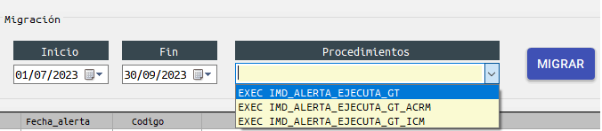
IMD Alertas: Se deben de realizar las cargas de los archivos con las estructura respectiva para cada tabla, eso alimenta las tablas de IMD Alertas
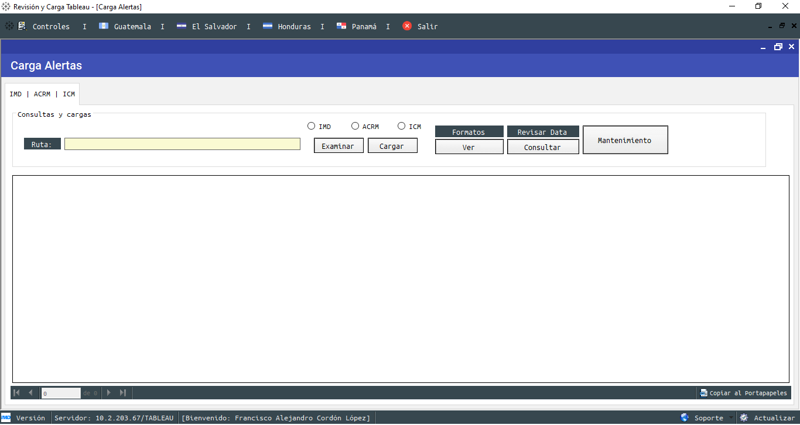
Hay que revisar que data hay cargda con el botón consultar, asímismo, para poder visualizar los formatos de carga para cada área hay que clickear el botón de formatos:
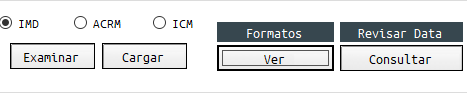
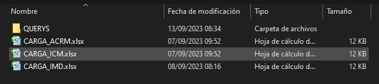
En los formatos de carga hay columnas en color amarillo, de estas no deben ser reemplazados los datos que tienen ya que esto identifica a cada tipo de alerta que se carga.
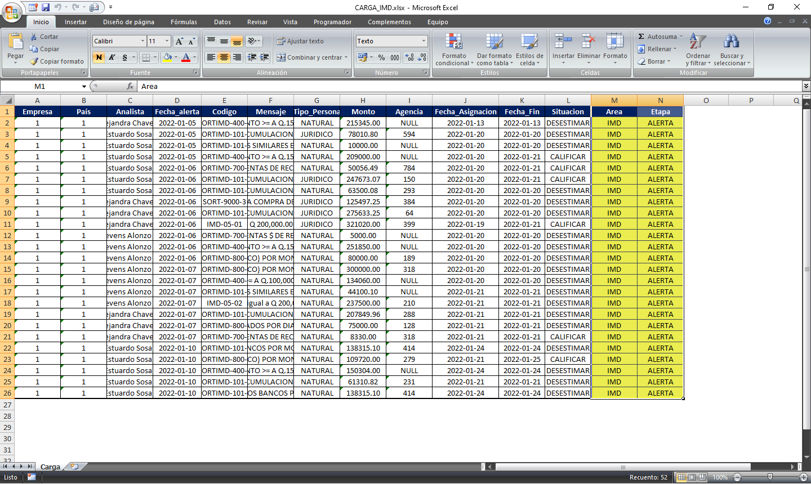
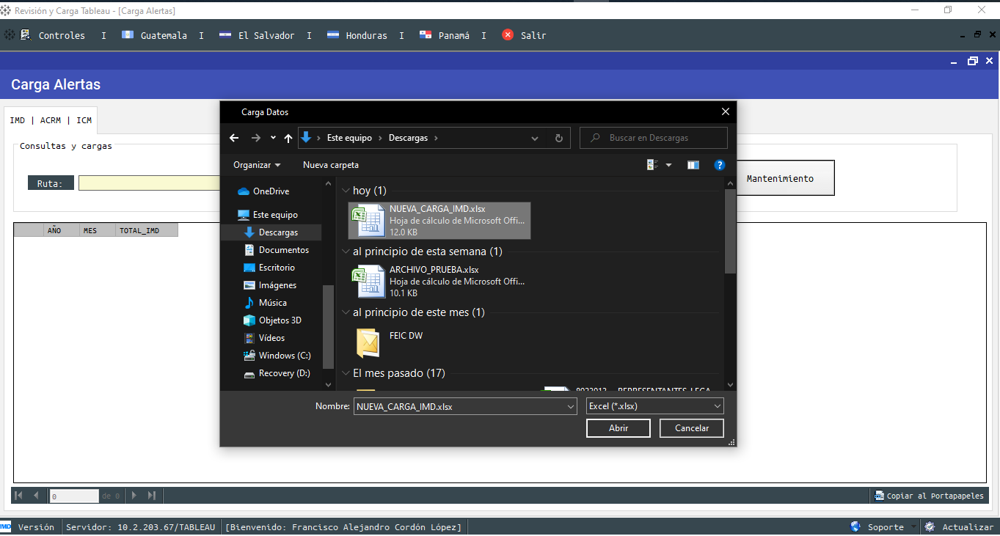
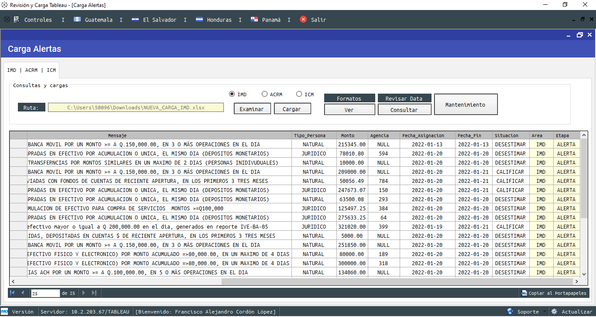
Elegir la opción de carga por el tipo de alertas y clickear en el botón Cargar
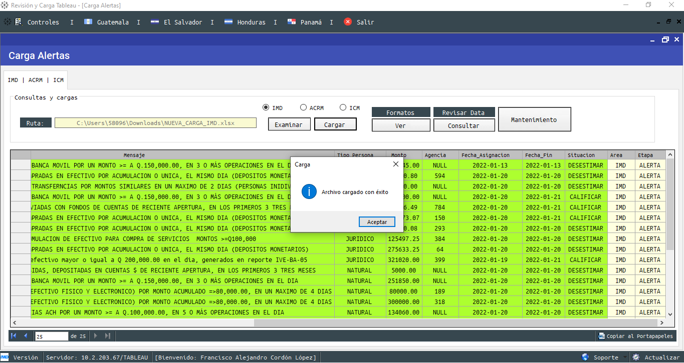
Realizar una consulta después de la carga para ver el resumen de los datos cargados
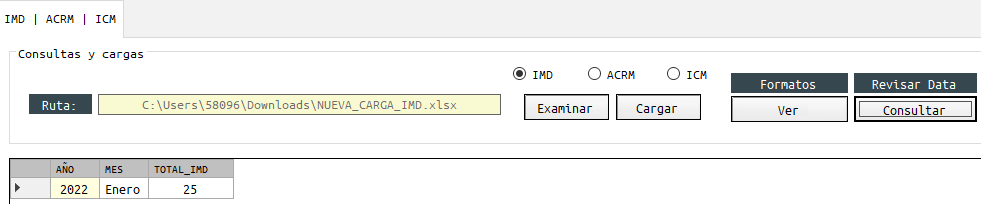
Si es necesario hacer modificaciones, clickear en el botón de Mantenimiento, para poder realizar consultas personalizadas o también querys por defecto para realizar consultas o eliminar datos
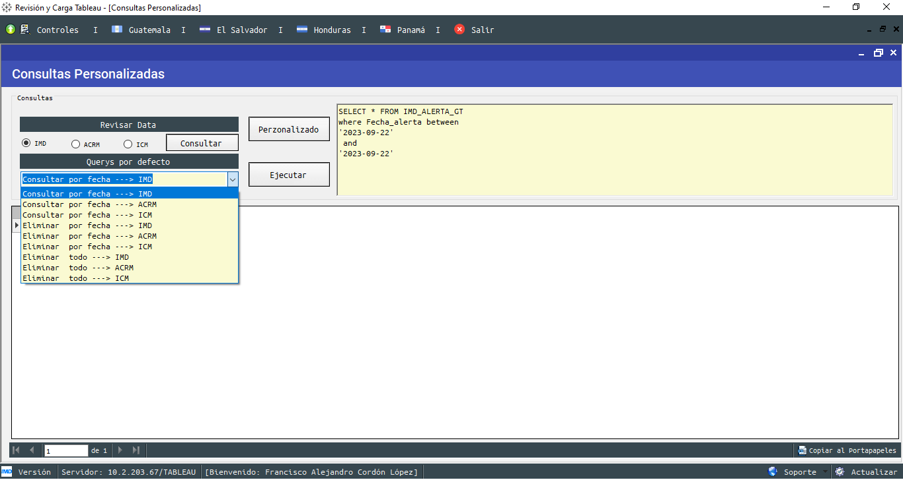
© Francisco Cordón - 2023